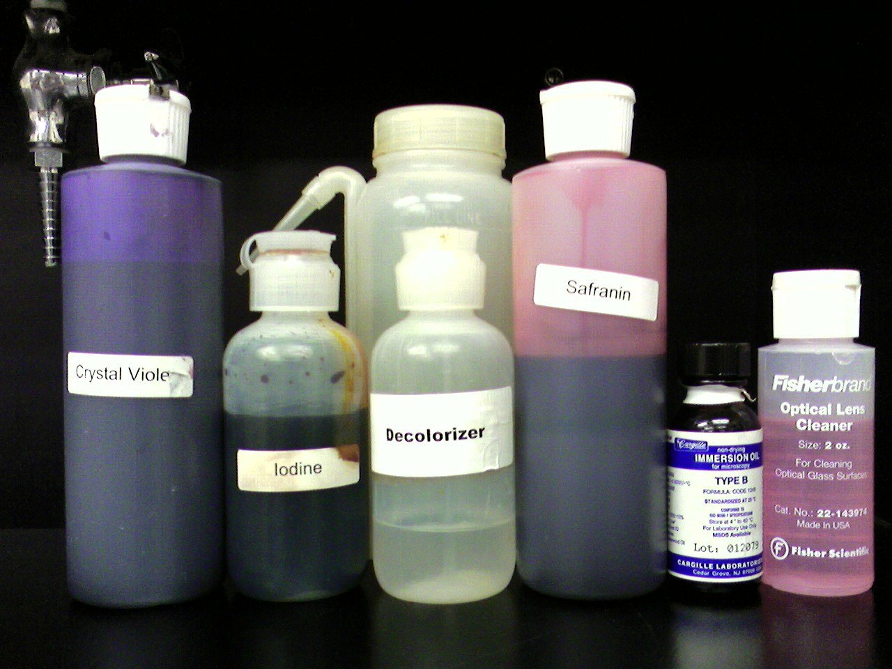

Materials & Reagents
Glass slides

Inoculation loop

Staining tray

Bacterial sample

Distilled water
Bunsen burner

Reagents
Reagents
| Primary Stain | Crystal Violet |
| Mordant | Gram Iodine |
| Decolorizer | Ethyl Alcohol |
| Secondary Stain | Safranin |